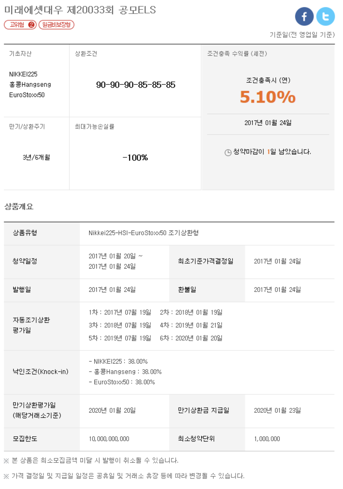
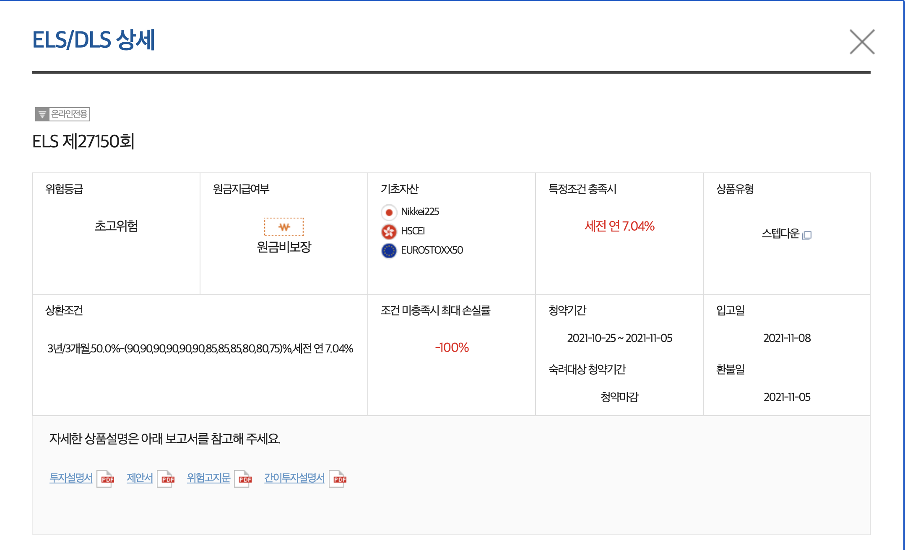
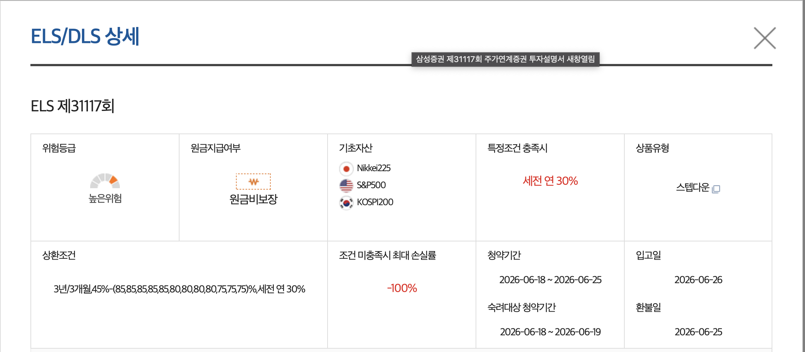

ELS(Equity Linked Securities)는 주식 연계 파생결합증권입니다. KOSPI200·S&P500 같은 주가지수나 특정 종목의 가격에 따라 수익이 결정되며, 은행 예금과 달리 원금이 보장되지 않습니다. 증권사가 발행하고, 통상 3년 만기에 6개월마다 조기 상환 기회가 주어지는 구조입니다.
점수가 평균 80점인 학생 C와, 학생 A·B가 있습니다. A는 B에게 내기를 제안합니다. - no AI
ELS의 수익을 결정하는 기준이 되는 지수나 종목입니다. 예를 들어 KOSPI200, S&P500, EuroStoxx50 같은 주가지수가 기초자산이 됩니다. 기초자산 가격이 오르거나 내리는 것에 따라 내 수익이 달라집니다.
6개월마다 기초자산 가격을 평가합니다. 조건(상환조건)(예: 90%) 이상이 만족되면 약속된 수익(연 6% 내외)을 받고 상품이 종료됩니다. 3년을 기다리지 않고 일찍 끝낼 수 있습니다.
조기상환 조건을 한 번도 충족하지 못해 3년이 지났을 경우, 낙인이 발동되지 않았다면 3년치 이자와 원금을 받는 상환 방식입니다.
조기·만기 상환이 가능한지 판단하는 기준선입니다. 평가일에 기초자산이 상환조건 이상이면 상환 성공하여 이자+원금을 받고 계약종료, 이 선 미만이면 다음 평가로 넘어갑니다.
만기 전 기초자산이 한 번이라도 낙인(예: 50%) 아래로 내려가면, 이후 상환조건을 충족하지 못할 경우 만기 시 하락률만큼 원금을 잃을 수 있습니다.
A = 증권사, B = 투자자, C의 성적 = 주가지수입니다.
C의 성적이 잘 유지되면 B(투자자)는 이자를 받고, 상환조건보다 성적이 크게 떨어지거나 낙인에 닿으면 원금 손실이 생깁니다. 이것이 ELS의 구조입니다.
ELS는 수익 지급 방식과 구조에 따라 크게 3가지 유형으로 나뉩니다.
| 유형 | 📉 스텝다운형 | 💰 월지급식형 | 🦎 리자드형 |
|---|---|---|---|
| 수익 지급 방식 | 조기상환 또는 만기 시 한 번에 지급 | 매월 일정 수익을 지속 지급 | 낙인 발동 전 조기상환 시 원금+이자 지급 |
| 상환조건 변화 | 95→90→85→85→80→75 (점점 낮아짐) | 별도 상환조건 없이 매월 자동 지급 | 낙인 발동 전까지만 조기상환 조건 유효 |
| 낙인 발동 시 | 만기까지 상환조건 미달 시 원금 손실 | 월 지급 중단, 원금 손실 가능 | 낙인 발동 전 조기상환되면 손실 없음 |
| 특징 | 가장 일반적인 구조, 만기 3년 | 현금 흐름이 필요한 투자자에게 적합 | 낙인 전 탈출하면 안전, 낙인 후엔 일반 ELS와 동일 |
| 장점 | 장기 보유 시 상환 가능성 높아짐 | 매월 수익 확인 가능, 현금흐름 안정 | 낙인 발동 직전 조기상환으로 손실 회피 가능 |
| 단점 | 만기까지 돈이 묶임 | 낙인 발동 시 원금 손실 + 월 지급 중단 | 낙인 발동 후엔 일반 ELS와 동일하게 손실 위험 |
원금 200만원 · 연 이율 10% 기준 — 시간이 지날수록 상환조건가 낮아져 조기상환이 쉬워집니다.
| 평가 시점 | 상환조건 (조기상환 기준) | 누적 이자율 | 이자 | 수령액 (원금 포함) |
|---|---|---|---|---|
| 6개월 | 95점 이상 | 5% | 10만원 | ✅ 210만원 |
| 1년 | 90점 이상 ↓ | 10% | 20만원 | ✅ 220만원 |
| 1년 6개월 | 85점 이상 ↓ | 15% | 30만원 | ✅ 230만원 |
| 2년 | 85점 이상 | 20% | 40만원 | ✅ 240만원 |
| 2년 6개월 | 80점 이상 ↓ | 25% | 50만원 | ✅ 250만원 |
| 3년 (만기) | 75점 이상 ↓ | 30% | 60만원 | ✅ 260만원 |
| 3년 (만기) | 낙인(50점) 미만 터치 후 50~75점 | — | — | ❌ 낙인 발동 → 원금 손실 |
| 평가 시점 | 기초자산 점수 | 상환조건 | 결과 |
|---|---|---|---|
| 6개월 | 92 | 95 이상 | ❌ 미달 — 다음으로 |
| 1년 | 88 | 90 이상 | ❌ 미달 — 다음으로 |
| 1년 6개월 | 83 | 85 이상 | ❌ 미달 — 다음으로 |
| 2년 | 87 | 85 이상 | ✅ 상환조건 충족! |
200만원 + 이자 40만원 (연 10% × 2년) = 240만원 수령 후 계약 종료
조기상환에 5번 모두 실패하고, 만기에 상환조건(85%)도 못 넘어도 — 낙인(60%)이 단 한 번도 발동되지 않았다면 원금과 3년치 이자를 모두 받습니다.
| 평가 시점 | 기초자산 점수 | 상환조건 | 낙인 60% | 결과 |
|---|---|---|---|---|
| 6개월 | 88 | 95 이상 | — | ❌ 조기상환 실패 |
| 1년 | 82 | 90 이상 | — | ❌ 조기상환 실패 |
| 1년 6개월 | 75 | 85 이상 | — | ❌ 조기상환 실패 |
| 2년 | 72 | 85 이상 | — | ❌ 조기상환 실패 |
| 2년 6개월 | 70 | 80 이상 | — | ❌ 조기상환 실패 |
| 3년 (만기) | 68 | 85 이상 | ✅ 한 번도 60 미만 없음 | ✅ 원금 + 이자 전액 수령! |
만기에 68점으로 상환조건(85%)을 넘지 못했지만, 3년 내내 낙인(60%) 선을 한 번도 터치하지 않았습니다.
→ 낙인 미발동이므로 원금 + 3년치 이자를 전액 수령.
200만원 + 이자 60만원 (연 10% × 3년) = 260만원 수령 후 계약 종료
상환조건(85%)을 못 넘어도 괜찮습니다. 낙인(60%)만 발동되지 않으면 손실은 없습니다.
조기상환 실패 ≠ 손실 | 낙인 발동 = 손실
낙인이 발동된 뒤 만기까지 단 한 번도 상환조건을 넘지 못하면, 만기 기초자산 점수를 기준으로 손실이 확정됩니다.
| 평가 시점 | 기초자산 점수 | 상환조건 | 결과 |
|---|---|---|---|
| 6개월 | 82 | 95 이상 | ❌ 미달 |
| 1년 | 70 | 90 이상 | ❌ 미달 |
| 1년 6개월 | 48 💥 | 85 이상 | 💥 낙인 발동! |
| 2년 | 60 | 85 이상 | ❌ 미달 |
| 2년 6개월 | 65 | 80 이상 | ❌ 미달 |
| 3년 (만기) | 68 | 75 이상 | ❌ 미달 → 원금손실 확정 |
1년 6개월째 낙인(50 미만) 발동 💥
이후에도 상환조건을 한 번도 넘지 못하고 만기 점수 68점 → 상환조건(75) 미달
200만원 × 68% = 136만원만 수령 (64만원 손실)
낙인이 발동되더라도 이후 평가일에 상환조건을 넘으면 정상적으로 조기상환되어 원금 + 이자를 받습니다. 낙인 발동이 곧 손실 확정이 아닙니다.
| 평가 시점 | 기초자산 점수 | 상환조건 | 결과 |
|---|---|---|---|
| 6개월 | 82 | 95 이상 | ❌ 미달 |
| 1년 | 70 | 90 이상 | ❌ 미달 |
| 1년 6개월 | 46 💥 | 85 이상 | 💥 낙인 발동! |
| 2년 | 88 | 85 이상 | ✅ 상환조건 충족 → 조기상환 성공! |
낙인이 발동됐지만 2년째 평가일에 88점으로 상환조건(85) 충족
→ 정상 조기상환으로 원금 + 이자 전액 수령
200만원 + 이자 40만원 (연 10% × 2년) = 240만원 수령 후 계약 종료
낙인 발동 = 즉시 손실이 아닙니다. 이후 상환조건만 넘으면 이자까지 정상 수령합니다.
진짜 위험한 경우: 낙인 발동 후 → 만기까지 상환조건을 단 한 번도 못 넘길 때
→ 이때만 만기 기초자산 점수 기준으로 원금 손실이 확정됩니다.
복리는 이자에 이자가 붙습니다. 예를 들어 1년 차에 받은 이자 20만원이 2년 차에도 같이 굴러서 이자를 냅니다.
단리는 원금에만 이자가 붙습니다. ELS는 조기상환이 되면 계약이 끝나기 때문에, 이자를 받은 채로 계속 굴리는 상황이 없습니다.
ELS에서 내 돈은 항상 원금 그대로 묶여 있다가, 조기상환 또는 만기 때 한 번에 돌아옵니다.
이자는 묶여 있던 기간에 비례해서 쌓이고, 상환 시점에 원금과 함께 한꺼번에 받습니다.
낙인이 발동되면 이자는 없고, 원금만 깎인 채로 돌아옵니다.
| 용어 | 의미 | 예시 |
|---|---|---|
| 기초자산 | 수익을 연동하는 기준이 되는 지수·종목 | KOSPI200, S&P500, 삼성전자 |
| 상환조건 | 조기·만기 상환 여부를 판단하는 가격 기준선 | 가입일 지수의 90%, 85% 등 — 이 선 이상이면 상환 성공 |
| 낙인(Knock-In) | 손실 구조가 작동하는 가격 하한선 — 한 번이라도 터치하면 발동 | 가입일 지수의 50% 또는 60% 미만 터치 시 발동 |
| 조기 상환 | 만기 전 조기상환 조건 충족 시 원금+수익 지급 후 종료 | 6개월 평가 시 90pt 이상 → 지급 |
| 만기 상환 | 3년 만기까지 유지 후 최종 평가 | 낙인 없으면 → 원금+이자수익 을 받고 계약 종료 |
지금까지 배운 개념들이 실제 상품에서 어떻게 적용되는지 살펴봅니다.

미래에셋대우 제20033회 공모ELS
고위험 2등급
❌ 원금 비보장형
3년 / 6개월마다 조기상환 평가
| 지수명 | 설명 |
|---|---|
| NIKKEI 225 | 일본 도쿄증시 대표 225개 기업 지수 |
| 홍콩 Hang Seng | 홍콩 증시 대표 지수 |
| EuroStoxx 50 | 유럽 주요 50개 기업 지수 |
3개 중 하나라도 상환조건 미달이면 조기상환이 안 됩니다. 일본·홍콩·유럽 시장이 모두 동시에 좋아야 수익을 받을 수 있습니다.
초반 3차까지는 90% 이상, 4차부터는 85%로 기준이 완화됩니다. 연 수익률 5.1% 기준.
| 평가 차수 | 평가일 | 조기상환 기준 | 누적 수익률 (연 5.1%) |
|---|---|---|---|
| 1차 | 2017년 07월 19일 | 90 이상 | 2.55% |
| 2차 | 2018년 01월 19일 | 90 이상 | 5.10% |
| 3차 | 2018년 07월 19일 | 90 이상 | 7.65% |
| 4차 | 2019년 01월 21일 | 85 이상 ↓완화 | 10.20% |
| 5차 | 2019년 07월 19일 | 85 이상 | 12.75% |
| 6차 (만기) | 2020년 01월 20일 | 85 이상 | 15.30% |
3개 지수 중 하나라도 최초 가격 대비 38% 이상 하락하면 낙인 발동.
즉, 최초가격의 62% 미만으로 떨어지는 순간 위험 구간에 진입합니다.
낙인 발동 후 만기(6차)에도 상환조건(85%) 미만이면 → 원금 손실 발생 (최대 -100%)
| 시나리오 | 결과 |
|---|---|
| 1차(6개월)에 3개 지수 모두 90% 이상 | ✅ 1,000만원 + 25.5만원 = 1,025.5만원 |
| 6차(3년 만기)까지 오고 1개의 지수가 상환조건 이하일때 - 수정 | ✅ 1,000만원 + 153만원 = 1,153만원 |
| 낙인 발동 후 만기에 주가 60% 수준 | ❌ 1,000만원 × 60% = 600만원 (400만원 손실) |
실제 판매된 삼성증권 ELS 상품을 위에서 배운 개념으로 직접 분석해봅니다.

삼성증권 ELS 제27150회
초고위험
❌ 원금 비보장형
스텝다운형
3개 지수 모두 상환조건을 만족해야 조기상환됩니다. 하나라도 미달이면 전체 실패.
| 지수명 | 설명 |
|---|---|
| Nikkei 225 | 일본 도쿄증시 대표 225개 기업 지수 |
| HSCEI | 홍콩 H주 지수 (중국 본토 기업 홍콩 상장) |
| EuroStoxx 50 | 유럽 주요 50개 기업 지수 |
만기 3년, 3개월마다 조기상환 평가(총 12차). 연 수익률 세전 7.04% 기준.
| 평가 차수 | 조기상환 기준 | 누적 수익률 (연 7.04%) |
|---|---|---|
| 1차 (3개월) | 90 이상 | 1.76% |
| 2차 (6개월) | 90 이상 | 3.52% |
| 3차 (9개월) | 90 이상 | 5.28% |
| 4차 (12개월) | 90 이상 | 7.04% |
| 5차 (15개월) | 90 이상 | 8.80% |
| 6차 (18개월) | 90 이상 | 10.56% |
| 7차 (21개월) | 85 이상 ↓ | 12.32% |
| 8차 (24개월) | 85 이상 | 14.08% |
| 9차 (27개월) | 85 이상 | 15.84% |
| 10차 (30개월) | 80 이상 ↓ | 17.60% |
| 11차 (33개월) | 80 이상 | 19.36% |
| 12차 만기 (36개월) | 75 이상 ↓ | 21.12% |
3개 지수 중 하나라도 최초 가격 대비 50% 미만으로 하락하면 낙인 발동.
낙인 발동 후 만기(12차, 36개월)에도 상환조건(75%) 미만이면 → 원금 손실 발생 (최대 -100%)
| 시나리오 | 결과 |
|---|---|
| 1차(3개월)에 3개 지수 모두 90% 이상 → 즉시 조기상환 | ✅ 1,000만원 + 17.6만원 = 1,017.6만원 |
| 7차(21개월)에 처음으로 3개 지수 모두 85% 이상 → 조기상환 | ✅ 1,000만원 + 123.2만원 = 1,123.2만원 |
| 12차 만기(36개월)까지 낙인 미발동, 75% 이상 | ✅ 1,000만원 + 211.2만원 = 1,211.2만원 |
| 낙인 발동 후 12차 만기까지 상환조건 미달, 만기 지수 50% 수준 | ❌ 1,000만원 × 50% = 500만원 (500만원 손실) |
높은 연 수익률(세전 30%) 구조의 실제 상품을 분석해봅니다.

삼성증권 ELS 제31117회
높은위험
❌ 원금 비보장형
세전 연 30%
3개 지수 모두 상환조건을 만족해야 조기상환됩니다. 하나라도 미달이면 전체 실패.
| 지수명 | 설명 |
|---|---|
| Nikkei 225 | 일본 도쿄증시 대표 225개 기업 지수 |
| S&P 500 | 미국 주요 500개 기업 지수 |
| KOSPI 200 | 한국 코스피 상위 200개 기업 지수 |
만기 3년, 3개월마다 조기상환 평가(총 12차). 연 수익률 세전 30% 기준.
| 평가 차수 | 조기상환 기준 | 누적 수익률 (연 30%) |
|---|---|---|
| 1차 (3개월) | 85 이상 | 7.5% |
| 2차 (6개월) | 85 이상 | 15% |
| 3차 (9개월) | 85 이상 | 22.5% |
| 4차 (12개월) | 85 이상 | 30% |
| 5차 (15개월) | 85 이상 | 37.5% |
| 6차 (18개월) | 80 이상 ↓ | 45% |
| 7차 (21개월) | 80 이상 | 52.5% |
| 8차 (24개월) | 80 이상 | 60% |
| 9차 (27개월) | 75 이상 ↓ | 67.5% |
| 10차 (30개월) | 75 이상 | 75% |
| 11차 (33개월) | 75 이상 | 82.5% |
| 12차 만기 (36개월) | 75 이상 | 90% |
3개 지수 중 하나라도 최초 가격 대비 45% 미만으로 하락하면 낙인 발동.
낙인 발동 후 만기(12차)에도 상환조건(75%) 미만이면 → 원금 손실 발생 (최대 -100%)
제27150회(연 7.04%)와 비교하면 수익률이 약 4배 높습니다.
그만큼 상환조건이 더 완화(85~75%)되어 있지만, 낙인 기준(45%)은 비슷한 수준입니다.
높은 수익률 = 더 높은 위험을 감수한다는 의미입니다.
| 시나리오 | 결과 |
|---|---|
| 1차(3개월)에 3개 지수 모두 85% 이상 → 즉시 조기상환 | ✅ 1,000만원 + 75만원 = 1,075만원 |
| 6차(18개월)에 처음으로 3개 지수 모두 80% 이상 → 조기상환 | ✅ 1,000만원 + 450만원 = 1,450만원 |
| 12차 만기(36개월)까지 낙인 미발동, 75% 이상 | ✅ 1,000만원 + 900만원 = 1,900만원 |
| 낙인 발동 후 만기까지 상환조건 미달, 만기 지수 40% 수준 | ❌ 1,000만원 × 40% = 400만원 (600만원 손실) |